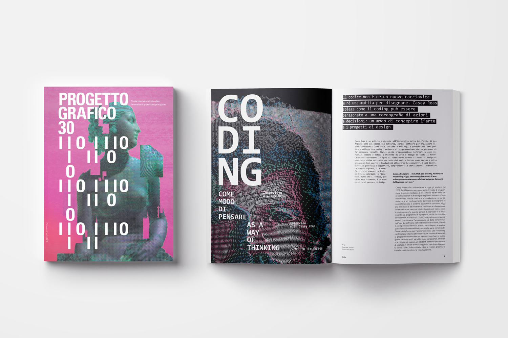
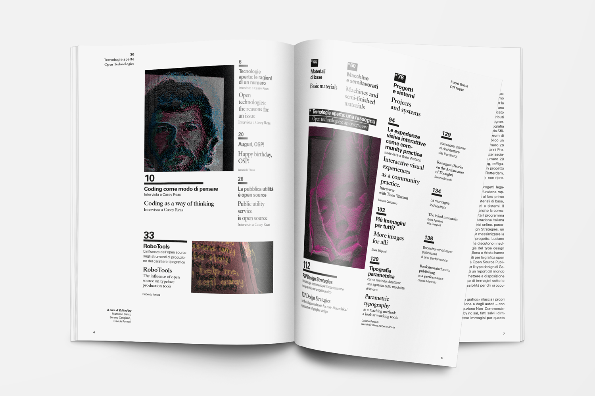
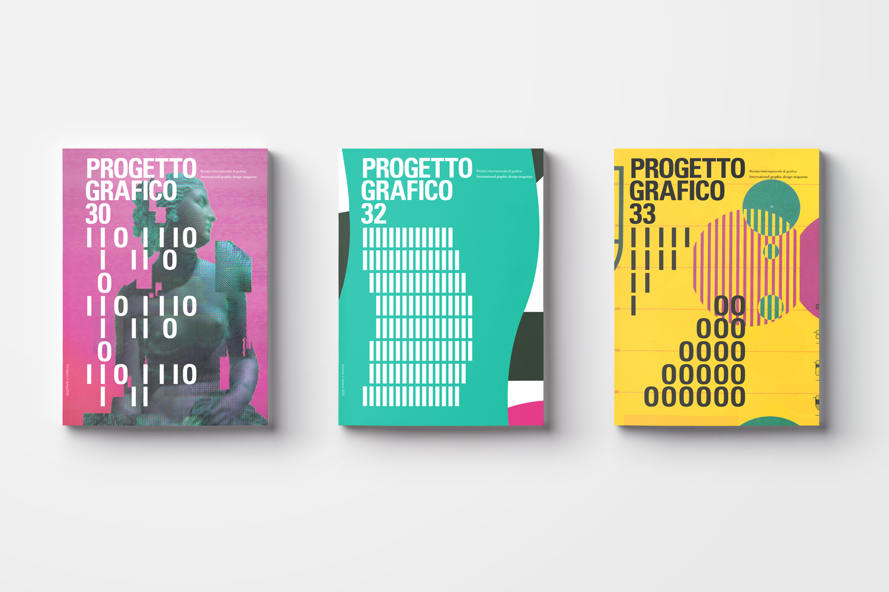
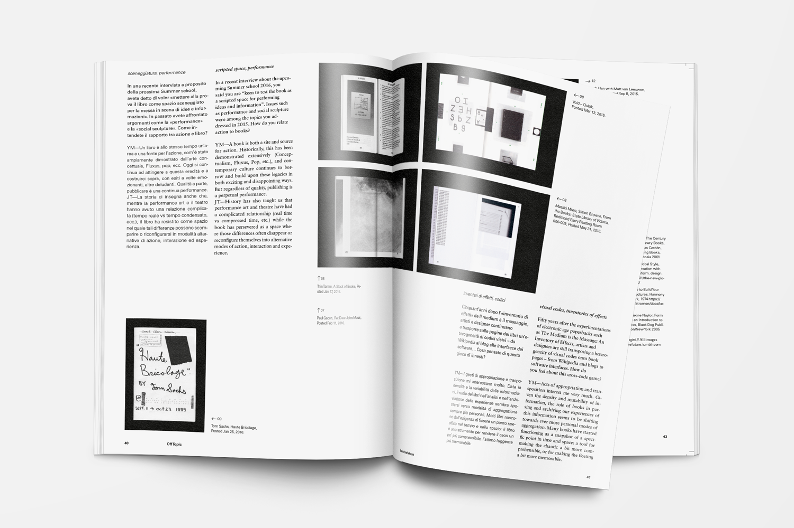

Progetto Grafico
SUPSI, 2019
During the Editorial Design course in school, I redesigned the international magazine "Progetto Grafico", issue #30. Once the general concept of the work was defined, I made choices about typography, layout and image processing. The highlights of this project were the images I produced with the help of the sketching software "Processing", that reflected perfectly the concept I wanted to develop and the idea for the series of covers. This last part, was interesting because it took in consideration the specific theme of the current issue and displayed a different variation of heading every time.
Editorial Design, Layout, Typography
SUPSI, 2019
During the Editorial Design course in school, I redesigned the international magazine "Progetto Grafico", issue #30. Once the general concept of the work was defined, I made choices about typography, layout and image processing. The highlights of this project were the images I produced with the help of the sketching software "Processing", that reflected perfectly the concept I wanted to develop and the idea for the series of covers. This last part, was interesting because it took in consideration the specific theme of the current issue and displayed a different variation of heading every time.
Editorial Design, Layout, Typography





Thank you for this typeface,
Raoul Gottschling
Raoul Gottschling